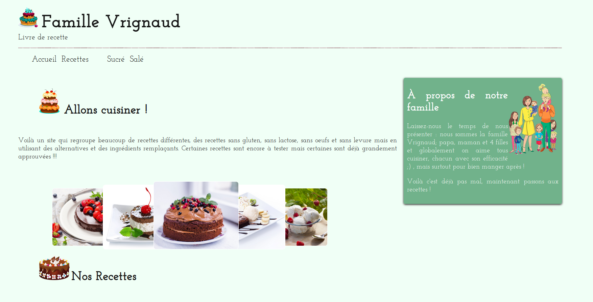

Sopra Banking
Présentation des TP de mon stage
Stage de 3 semaines au sein de Sopra Banking
Mes TP
J'ai effectuer un stage pour découvrir les métiers autour de
l'informatique mais également la vie en entreprise.
Au cours de ce stage j'ai pu, en plus de cette découverte
du monde du travail, réaliser des TP qui m'ont initié
au HTML, CSS, JavaScript.
Ce sont ces travaux que je recueille ici !
1 . Recettes
J'ai eu location de créer moi-même un site de recette en Markdown.
Ce site permet de rassembler plusieurs recettes favorites de ma famille.

En savoir plus ...
Vous pouvez accéder au site en cliquant la vignette qui suit.
2 . Recettes stylées
J'ai également recréer le site de recette à partir d'un thème dèjà entièrement défini.
En savoir plus ...
Vous pouvez accéder au site en cliquant la vignette qui suit.
3 . Carrousel
J'ai réaliser une série d'image sous forme de carrousel avec JQuery.
En savoir plus ...
Vous pouvez accéder au site en cliquant la vignette qui suit.
4 . Memory
J'ai créer un jeu de mémorisation à l'aide de JQuery.
En savoir plus ...
Vous pouvez accéder au site en cliquant la vignette qui suit.
5 . Caractères
J'ai également créer un jeu inspiré de TuxMath avec JQuey.

En savoir plus ...
Vous pouvez accéder au site en cliquant la vignette qui suit.
6 . Platformer
Pour finir j'ai créer un jeu de platforme avec JQuery en incluant un effet parallax..
En savoir plus ...
Vous pouvez accéder au site en cliquant la vignette qui suit.
THE END
Merci pour ce stage!!!